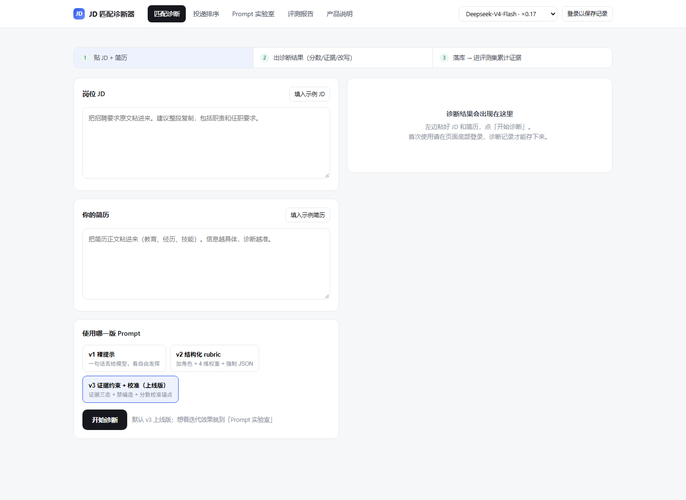

这套项目不是 6 个孤立 demo，而是一条能力链：
06 竞品拆解（学会怎么评产品）→ 05 Coze 助手（学会调 Prompt）→ 03 评测归因（把感觉变成规则打分）→ 02 FAQ Agent（评测用到 Agent）→ 01 JD 匹配诊断器（全部能力合成完整产品）；04 PRD 转线框图贯穿全程。
01
JD 匹配诊断器完整产品
粘贴 JD + 简历，输出四维加权评分、逐条证据标注（命中必须引用原文）、简历改写和 7 天行动清单。核心是"证据三态"防编造机制。
4 版 Prompt × 12 分层样本 × 48 次真实调用 · 编造率 1% · 通过率 0% → 67%
02
FAQ Agent · 工具调用与拒答完整产品
ReAct 客服 Agent：3 个工具 + "查不到就转人工"。20 条测试期望由人标注、判定由规则完成，含假命中陷阱样本。
命中率 85% → 95% · 1 条标注争议如实保留
03
评测与 Badcase 归因完整产品
4 条规则给模型回答打分（事实一致/拒答正确/格式合规/可执行）。规则迭代三轮，抓出评测器自己的两个 bug。
3 版规则 83.5 → 92.5 → 98.8 分（20 条回答交叉验证，防过拟合）
贯穿所有项目的三个原则
- 不让模型自评 —— 所有分数由规则计算：数字必须可追溯、拒答双向正确、格式硬校验。
- 评测集必须埋陷阱 —— 假命中、信息不足、过度包装、严重错配；只测正常样本会得到虚假的高分。
- 争议如实记录 —— 每个项目都有"没有修的问题"一节。改标注凑通过率的事，一件都没做。